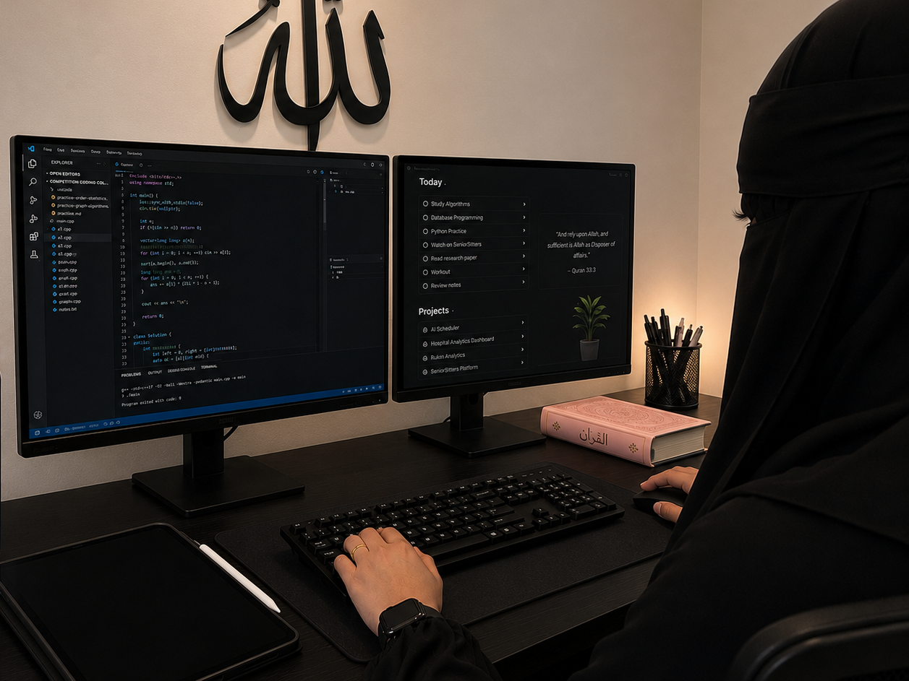

Computer Science
Engineering Student
ABOUT ME
Engineer in training, Founder in motion. Builder by nature.
I'm Anngel Jacobs, a computer science engineering student, founder, and analytics builder passionate about using technology and data to solve real problems and create meaningful impact in the world.
Founder
Rukn Analytics
Founder
SeniorSitters
MY STORY
How it all started
My journey began with curiosity and a drive to understand how things work. From an early interest in problem solving to studying computer science engineering, I've always been drawn to systems, whether it's code, data, people, or process.
I believe in continuous learning, working with integrity, and using my skills to empower others. Through Rukn Analytics and SeniorSitters, I've experienced firsthand how technology and compassion can create lasting change.
This is just the beginning.

WHAT DRIVES ME
Problem Solving
I love turning complex challenges into simple, effective solutions.
Growth Mindset
I'm committed to lifelong learning and becoming better every day.
Community Impact
I build with people in mind, creating value that improves lives and strengthens communities.
Purpose & Faith
My faith guides my purpose, values, and the way I show up in everything I do.
A LITTLE MORE ABOUT ME
MOMENTS THAT SHAPE ME
Lessons from classrooms, courts, code, and community.
Let's build something amazing together.
I'm always open to meaningful projects, collaborations, and opportunities to create impact.
Let's Connect